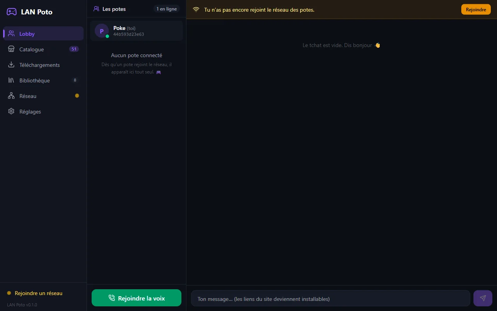
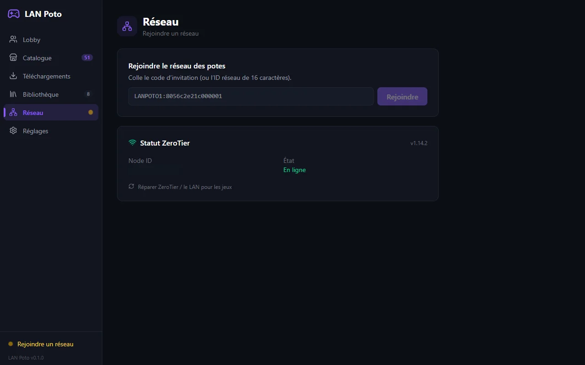
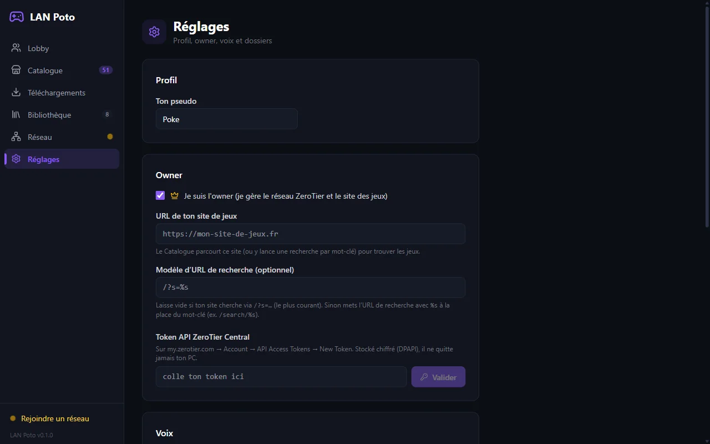

Application Windows qui crée un LAN virtuel (ZeroTier) pour 2 à 4 joueurs : lobby, tchat, voix, catalogue de jeux partagé et installation automatique.
Projet privé — présenté ici en captures. Code et téléchargement non publics.



ZeroTier installé en silence, on rejoint avec un code d'invitation.
Voix WebRTC sans serveur, modificateur de voix (Chipmunk, Robot, Alien…).
Le catalogue se propage entre potes en gossip.
File de téléchargement et installation automatique des jeux.